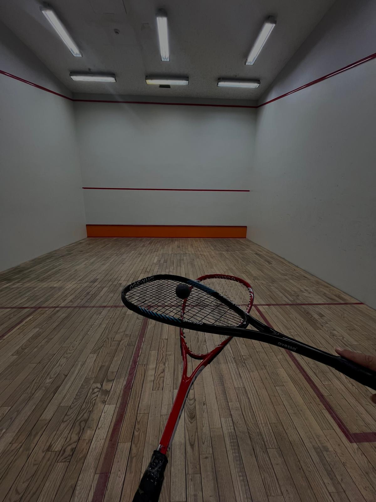
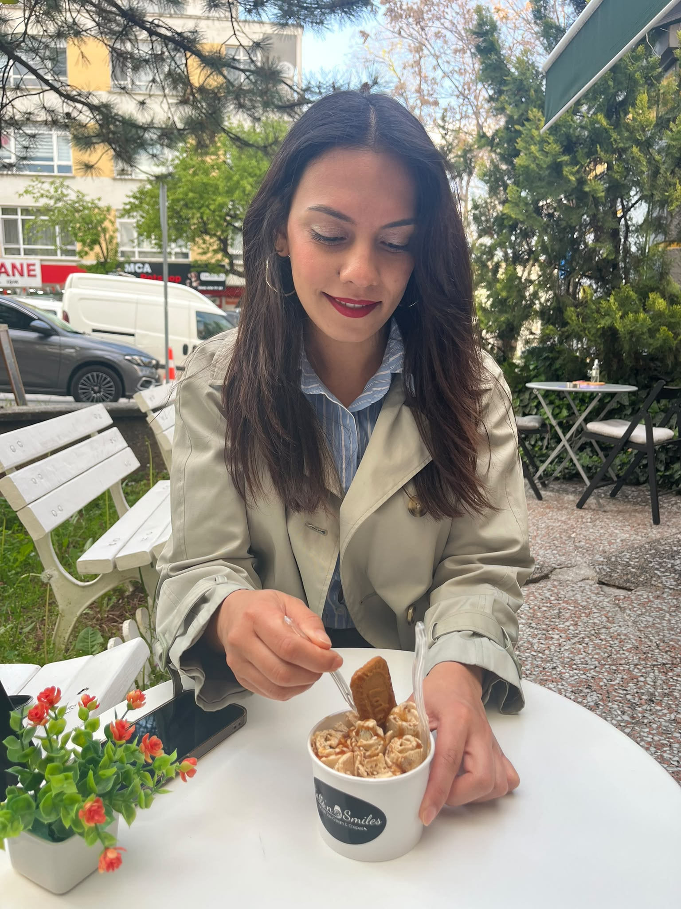
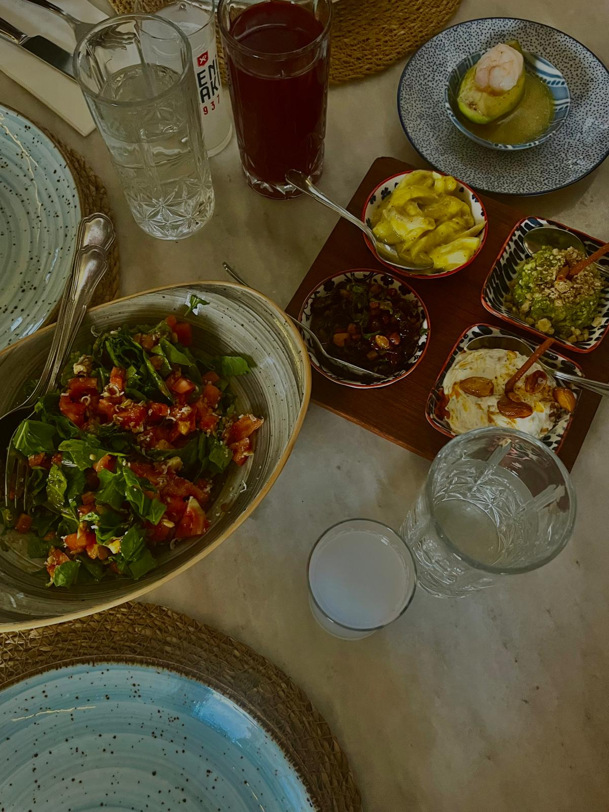
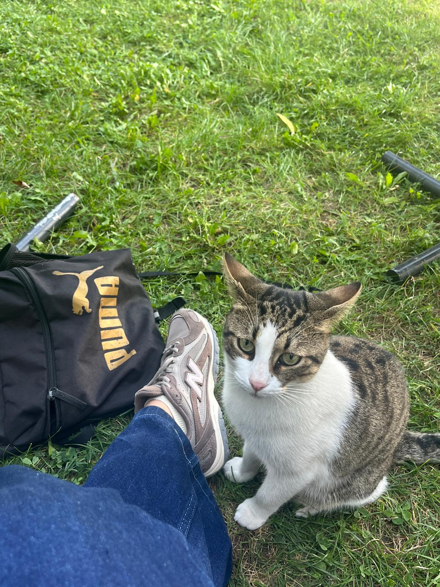
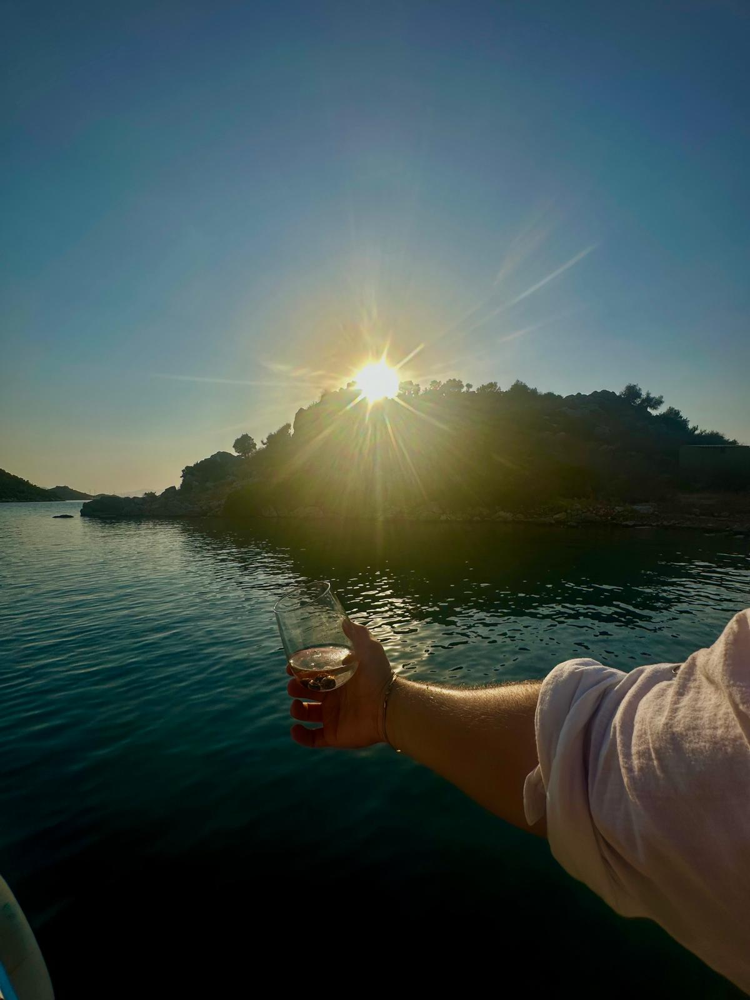
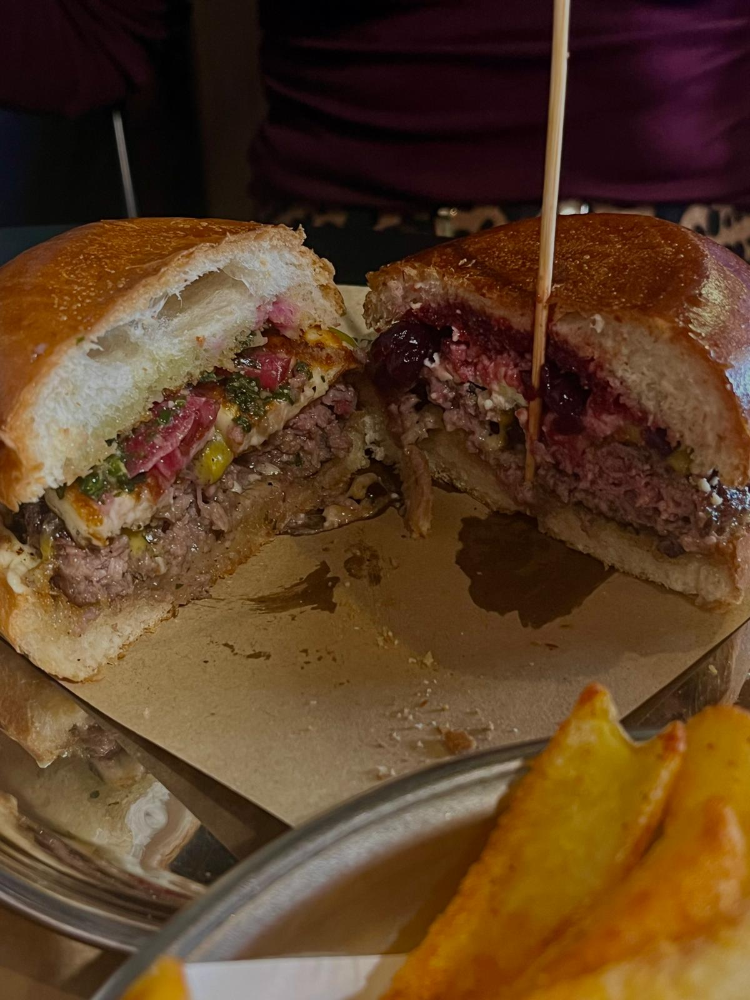

Photography
I enjoy capturing moments, places and details that catch my attention while travelling.
HOBBIES
Outside geomatics, I enjoy photography, travelling, music and exploring new technologies.
INTERESTS
I enjoy capturing moments, places and details that catch my attention while travelling.
I enjoy discovering new cities, cultures and places I have never experienced before.
I enjoy listening to different genres and discovering new songs and artists.
I enjoy exploring web technologies, GIS tools, new software and digital creation methods.
FAVORITE PLACES

ANKARA · YENİMAHALLE
One of my favorite places for exercise and squash.
View on Map Open in Google Maps
ANKARA · ÇANKAYA
Our favorite ice cream spot in the city, with my favorite person.
Barbaros · Abay Kunanbay Caddesi 32/A
View on Map Open in Google Maps
ANKARA
My favorite meze spot in the city.
Gaziosmanpaşa · Filistin Caddesi 2/B · Ankara
View on MapOpen in Google Maps
ANKARA
The place where we have spent the most time over the past four years.
Hacettepe Üniversitesi · Beytepe Kampüsü · Ankara
View on MapOpen in Google Maps
MUĞLA · MARMARİS
The place where I feel happiest.
Marmaris · Muğla
View on MapOpen in Google Maps
ANKARA
My favorite burger spot in the city — especially the sour cherry burger.
Alacaatlı · Beyler Caddesi 36/1 · Ankara
View on MapOpen in Google Maps